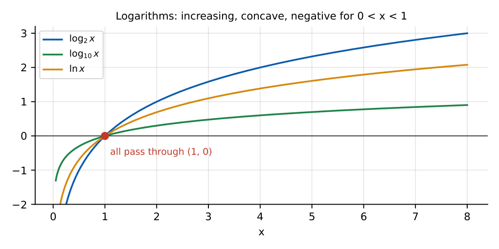

Number Systems, Powers, Exponents and Logarithms
HCF/LCM, divisibility, remainders and unit digits, number of divisors, trailing zeros, base conversion, laws of exponents and logarithms. Most questions are solved with a pattern, not a calculator.
4.1 Number systems
Natural \(\subset\) whole \(\subset\) integers \(\subset\) rational \(\subset\) real. A prime has exactly two divisors; \(1\) is not prime; \(2\) is the only even prime.
Divisibility: by \(2\) (last digit even), \(3\) (digit sum), \(4\) (last two digits), \(5\) (ends 0/5), \(8\) (last three), \(9\) (digit sum), \(11\) (alternating digit sum), \(6\) (2 and 3).
Prime factorisation \(N=p_1^{a}p_2^{b}\cdots\): number of divisors \(=(a+1)(b+1)\cdots\), sum of divisors \(=\prod\frac{p^{a+1}-1}{p-1}\).
\(\mathrm{HCF}\times\mathrm{LCM}=\) product of the two numbers. HCF: lowest powers of common primes; LCM: highest powers of all primes.
\(360=2^3\cdot3^2\cdot5\): divisors \(=4\cdot3\cdot2=24\). \(\mathrm{LCM}(12,15,20)=60\) (\(2^2\cdot3\cdot5\)). \(\mathrm{HCF}(12,18)=6\), \(\mathrm{LCM}=36\).
4.1.1 Remainders, unit digits and trailing zeros
Remainder when \(a^n\) is divided by \(m\): reduce \(a\) modulo \(m\) and find the cycle. Unit digits of powers repeat with period \(\le4\): \(2:2,4,8,6\); \(3:3,9,7,1\); \(7:7,9,3,1\); \(4:4,6\); digits \(0,1,5,6\) never change. Use \(n\bmod4\) (taking \(4\) when it is \(0\)).
Trailing zeros of \(n!\): \(\left\lfloor\frac n5\right\rfloor+\left\lfloor\frac n{25}\right\rfloor+\left\lfloor\frac n{125}\right\rfloor+\cdots\) (\(100!\) has \(20+4=24\)).
Sum of the first \(n\) naturals \(\frac{n(n+1)}2\); of odds \(n^2\); of squares \(\frac{n(n+1)(2n+1)}6\).
Base conversion. \((1011)_2=8+2+1=11\); \(255=(FF)_{16}=(11111111)_2\). Divide repeatedly by the base to convert from decimal; group bits in threes (octal) or fours (hex).
4.2 Powers and exponents
\(a^ma^n=a^{m+n}\), \(\ \dfrac{a^m}{a^n}=a^{m-n}\), \(\ (a^m)^n=a^{mn}\), \(\ (ab)^n=a^nb^n\), \(\ a^0=1\), \(\ a^{-n}=\dfrac1{a^n}\), \(\ a^{m/n}=\sqrt[n]{a^m}\).
\(2^{10}=1024\approx10^3\), \(\ 2^{20}\approx10^6\). \(\ (a+b)^2=a^2+2ab+b^2\), \(a^2-b^2=(a-b)(a+b)\), \(a^3\pm b^3=(a\pm b)(a^2\mp ab+b^2)\).
Example: \(8^{2/3}\cdot9^{-1/2}=4\cdot\frac13=\frac43\). Surds: \(\sqrt{ab}=\sqrt a\sqrt b\); rationalise \(\frac1{\sqrt a+\sqrt b}=\frac{\sqrt a-\sqrt b}{a-b}\).
4.3 Logarithms
\(\log_ab=x\iff a^x=b\) (\(a>0\), \(a\ne1\), \(b>0\)). \(\log_a1=0\), \(\log_aa=1\).
\(\log(MN)=\log M+\log N\), \(\ \log\frac MN=\log M-\log N\), \(\ \log M^n=n\log M\), \(\ \log_ab=\dfrac{\log_cb}{\log_ca}=\dfrac1{\log_ba}\), \(\ a^{\log_ab}=b\).
\(\log_{10}2=0.3010\), \(\log_{10}3=0.4771\), \(\log_{10}e=0.4343\). Number of digits of \(N\) (base 10) \(=\lfloor\log_{10}N\rfloor+1\). Warning: \(\log(M+N)\ne\log M+\log N\).

Digits in \(2^{100}\): \(100\times0.3010=30.10\), so \(31\) digits. \(\log_264=6\). \(\log_{100}1000=\frac32\).
(i) \(1\) is neither prime nor composite. (ii) \(\log(a+b)\ne\log a+\log b\). (iii) Unit-digit cycles: when \(n\bmod4=0\) use the fourth term, not the zeroth. (iv) \((a+b)^n\ne a^n+b^n\). (v) \(-2^2=-4\) but \((-2)^2=4\).
Reduce huge powers by finding the cycle length. Count divisors from the prime factorisation. For trailing zeros count factors of \(5\) only. For digit counts use \(\log_{10}\). Approximate \(2^{10}\approx1000\) to estimate powers of \(2\).
4.4 GATE problems
Q1. \(\mathrm{LCM}(12,18)=\) (A) 6 (B) 36 (C) 72 (D) 216.
Q2. \(\log_264=\) (A) 5 (B) 6 (C) 8 (D) 32.
Q3. The unit digit of \(7^{2025}\) is (A) 1 (B) 3 (C) 7 (D) 9.
Q4. The number of trailing zeros in \(100!\) is (A) 20 (B) 22 (C) 24 (D) 25.
Answers: Q1 (B). Q2 (B). Q3 (C): \(2025\bmod4=1\). Q4 (C).
Q5. Given \(\log_{10}2=0.3010\), the number of digits in \(2^{100}\) is (A) 30 (B) 31 (C) 32 (D) 33.
Q6. The remainder when \(2^{50}\) is divided by \(7\) is (A) 1 (B) 2 (C) 4 (D) 6.
Q7. The number of positive divisors of \(360\) is (A) 18 (B) 20 (C) 24 (D) 30.
Answers: Q5 (B). Q6 (C): \(2^3\equiv1\pmod7\), \(50=3\cdot16+2\), \(2^2=4\). Q7 (C).
Q8. \(\mathrm{LCM}(12,15,20)=\) .
Q9. The sum of the first \(20\) natural numbers is .
Q10. The remainder when \(17^{17}\) is divided by \(5\) is .
Answers: Q8: 60. Q9: 210. Q10: \(17\equiv2\), \(2^{17}\), \(17\bmod4=1\), so \(2\).
Q11. Which logarithm identities are true? (A) \(\log(ab)=\log a+\log b\) (B) \(\log(a+b)=\log a\cdot\log b\) (C) \(\log a^n=n\log a\) (D) \(\log_ab=1/\log_ba\).
Answers: Q11: (A), (C), (D).
T1. HCF\(\times\)LCM of \(12\) and \(18\)? T2. Unit digit of \(3^{10}\)? T3. \(\log_{10}1000\)?
Answers: T1: 216. T2: 9 (\(10\bmod4=2\)). T3: 3.
- Divisors \(=\prod(a+1)\); HCF\(\times\)LCM \(=\) product; trailing zeros \(=\sum\lfloor n/5^k\rfloor\).
- Unit-digit cycles of length \(\le4\); remainders by finding the cycle.
- Exponent laws; \(a^{m/n}=\sqrt[n]{a^m}\).
- Log laws, change of base, digits \(=\lfloor\log N\rfloor+1\); \(\log2=0.3010\), \(\log3=0.4771\).